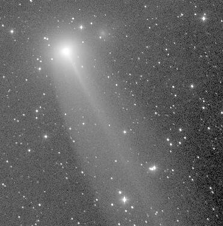

This concludes Comet Comments, which began in the September 1978 issue of this newsletter. I had actually written a short article about Comet Meier in April of that year, but in September I started writing on a monthly basis. All I wanted to do was to let other amateur astronomers know where the observable comets were in the sky. And when I knew the discovery circumstances, or the discoverer him/herself, I wanted to share that with the readers too.
Perhaps most interesting to my readers was a feature I ran for the first 15 years. It was titled "Comet Tales" and featured series on past comet hunters, present comet hunters, the telescopes these people use, Comet Halley, and then five years of everything you would ever want to know about comets and comet hunting. In the past five years, "Comet Hunting Notes" has served a similar purpose. It is often this part of Comet Comments which took the most time to prepare.
Getting back to 1978, the editors of Ephemeris were Ed Schell and Penny Penschmidt. The early Comet Comments were handwritten by me and then hand-delivered to Ed. In time I graduated to using a very old typewriter. By 1981 a club in Delaware wanted to receive Comet Comments and a couple of years later Gerry Rattley moved to Arizona and wanted it in his new club's newsletter too. I remember using carbon paper to write the additional copies.
Circulation grew with the interest of Halley's Comet and has steadily grown ever since. At the end, Comet Comments was being received in the Philippines, China, India, Australia, New Zealand, South Africa, Brazil, Argentina, Chile, Italy, Norway, the Netherlands, Germany, England, and Canada. I was e-mailing it to a list of 100 individuals, snail mailing it to 15 more, and mailing it to another half-dozen through SASEs. And to think it all started with the SJAA Ephemeris.
I would like to thank the San Jose Astronomical Association for encouraging me to write Comet Comments. I also want to thank the newsletter editors and readers for making it easier to do.
Don Machholz, April 20, 2000
Many of you will want to find information about comet ephemerides. To assist you, your Ephemeris editors have compiled some web pages. And here they are...
http://encke.jpl.nasa.gov/eph.html will give you almost everything you'll need even if you want to compute your own ephemerides.
http://encke.jpl.nasa.gov/whats_visible.html will give you a list of comets currently visible.
http://encke.jpl.nasa.gov/will_be_visible.html will give you a list of comments that will be visible in the near future.
http://encke.jpl.nasa.gov/info.html Other sources of Information.
Now get out there and find a comet!
|  |